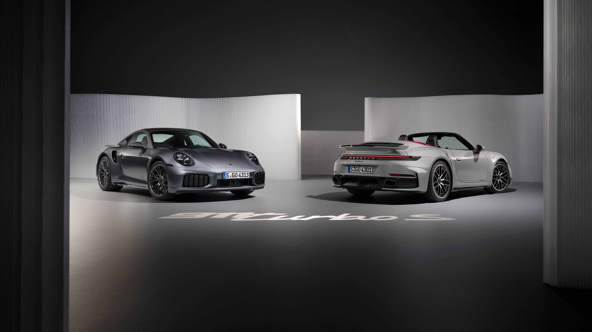

911 Turbo S
Technical Data
| Engine | 3.7-litre twin-turbocharged 6-cylinder boxer engine |
|---|---|
| Displacement | 3,745 cm³ |
| Power | 650 PS / 478 kW |
| Torque | 800 Nm |
| Drivetrain | All-wheel drive |
| Transmission | 8-speed Porsche dual-clutch transmission (PDK) |
| 0–100 km/h | 2.7 s |
| Top Speed | 330 km/h |
| Length | 4,535 mm |
| Width | 1,900 mm |
| Height | 1,303 mm |
| Wheelbase | 2,450 mm |